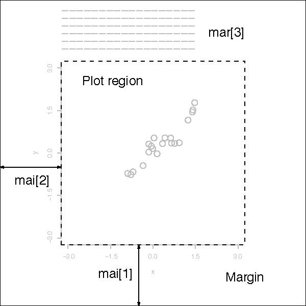

概論
畫布可以分成多個繪圖區(簡稱組合圖,多圖)，不同指令畫在同一個畫布上,文中簡稱疊圖。
- 高階指令,例如:barplot, boxplot, curve, hist, plot, dotchart, image, matplot,
mosaicplot, stripchart, contour,這些指令大體上有兩個動作:
- 新增畫布 canvas
- 畫圖
- 低階指令則只有畫圖,添到目前的畫布上而不新增畫布。例如， abline, lines, segments, points,polygon, grid 。還有增添文字的函數,例如t: legend, text, mtext,而座標軸相關函數,則有: axis, box, rug
高階和低階函數的關係,例如指令 plot, hist, boxplot, scatterplot()等等,會在目前的視窗上新增畫布，然後畫圖,而低階指令例如line()則是疊圖。這裡另外看看幾種自行控制的方法：
- 多視窗(multiple windows)、
- 組合圖(combining figure) 畫布分割
- 疊圖(overlay)討論。同一張畫布增補其他資料或樣本點。
一般視窗作業系統的繪圖，會有一個抽象物件device。在這個device上，有一個抽象物件canvas，和繪圖工具例如，水彩筆之類的抽象物件可以指定顏色，線條粗細等等。
在R中,對應上述作業系統的關鍵字.Devices(paired list)、.Device(長度為1)、dev.cur()(目前的裝置active device)。這裡說的Device指的是視窗。在視窗裡面的畫布,就是R提供的繪圖函數輸出所在,例如plot(),hist()等等。
所以
dev.new()指的是開啟新視窗，🏷dev.cur()是目前視窗號碼,dev.prev()前一個視窗號碼。- 而
plot.new()則是新增畫布(我猜應該是透明,所以也可以用將兩個高階指令圖疊在一起)。見練習
多視窗
開多視窗的方法根據OS而不同，如下：
| Function | Platform |
|---|---|
| windows() | Windows |
| X11() | Unix |
| quartz() | Mac |
要關閉視窗，可以用函數dev.off()
如果要知道目前的視窗是那一個，可以參考 dev.cur()。
Note:
如果目前有多個圖窗，則一直呼叫這個函數dev.off()，會依次關閉視窗，直到函數傳回NULL。

討論下面的輸出結果：
比較程式碼在rmarkdown和console中執行的結果？🏷
if(.Platform$OS.type=="windows") windows() else X11()
hist(mtcars$mpg)

figure
dev.cur() # <!--html_preserve--><span data-bs-toggle="tooltip" data-bs-html="true" data-bs-placement="bottom" title="如果不在Rmarkdown中，應該是2">🏷</span><!--/html_preserve-->
#> windows
#> 3
# 重複上面3行
if(.Platform$OS.type=="windows") windows() else X11()
hist(mtcars$mpg)
dev.cur() # <!--html_preserve--><span data-bs-toggle="tooltip" data-bs-html="true" data-bs-placement="bottom" title="視窗編號正常顯示增加,但是圖形不出來。">🏷</span><!--/html_preserve-->
#> windows
#> 4
在rscript✔中執行正常(會有兩個視窗)。但是在RMD中只有一個圖。函數windows()好像第二次沒作用。
大致上結論是在RMD中不要用dev相關指令。
plot.new() # 同一個視窗，新增圖層
dev.new() #新視窗
plot(2:2) #🏷
dev.new()
plot(2,2)
# 圖形化完以後,才想到要補上title
dev.set(dev.prev()) # 到前一個視窗
title(main="test dev 1")
dev.set(dev.next()) # 到第二個視窗
title(main="test dev 2")
組合圖
組合圖的一個重要函數是par(),可以參考 。
同時顯示多個plot的結果，可以利用函數par() 或 layout( )。函數par( )的選項有：
mfrow=c(nrows, ncols): 填plot的方向為橫行(matrix flow by row)。(matrix form by row)mfcol=c(nrows, ncols)填入的方向為直行。(matrix form by column)
type的幾種基本類型
例如想要把不同線條的plot放在同一畫布上做比較,可以利用下面的指令
x <- c(1,3,4,7,8,9)
y <- c(0,3,6,9,7,8)
par(mfrow=c(2,3))
plot(x,y,main='plot(x,y)',col="red")
plot(x,y,type="l",main="plot(x,y,type='l')",col="green")
plot(x,y,type="b",main="plot(x,y,type='b')")
plot(x,y,type="o",main="plot(x,y,type='o')")
plot(x,y,type="s",main="plot(x,y,type='s')")
plot(x,y,type="h",main="plot(x,y,type='h')")

範例2x2
attach(mtcars)
par(mfrow=c(2,2))
plot(wt,mpg, main="Scatterplot of wt vs. mpg")
plot(wt,disp, main="Scatterplot of wt vs disp")
hist(wt, main="Histogram of wt")
boxplot(wt, main="Boxplot of wt")

分成三格
# attach(mtcars)
par(mfrow=c(1,3))
hist(wt)
hist(mpg)
hist(disp)

在console執行(課堂執行)
- 執行 🏷x
par() # 顯示目前的設定 def.par<-par() # 🏷 def.par$mfrow def.par2<-par(mfrow=c(1,3)) # 🏷 def.par$mfrow par()$mfrow # 目前的設定 par(def.par) # 還原註解🏷 - 上面的程式碼，
def.par<-par()如果par() 放了參數,會在設定完新參數以後，傳回舊紀錄(一個原因是,便於以後再還原)。 -
⛳ 但是在這個過程中，有些參數是無法修改的，因此
par() # 沒有重設功能,只是顯示目前的設定 op <- par(no.readonly = TRUE) # 🏷 par(col.lab="red") # 設定 x and y labels 為紅色 hist(mtcars$mpg) # 畫圖 par(op) # 🏷
有關畫布
 note:- mar: the margin size
- par(mar) 列出margin
- par(mar=c(1,1,1,1)) 更動margin
- pch: the plotting symbol (default is open circle)
- lty: the line type (default is solid line), can be dashed, dotted, etc.
- lwd: the line width, specified as an integer multiple
- col: the plotting color, specified as a number, string, or hex code; the colors function gives you a vector of colors by
name
par(col.lab="red")# red x and y labels
- las: the orientation of the axis labels on the plot
- bg: the background color
- oma: the outer margin size (default is 0 for all sides)
- mfrow: number of plots per row, column (plots are filled row-wise)
- mfcol: number of plots per row, column (plots are filled column-wise)
其他
下面這個函數resetPar()，用來將device回復成原先的設定值:
主要看這一行:par(no.readonly = TRUE)。
意思是說，不要傳回 readonly的設定。否則會有訊息。
resetPar <- function() {
dev.new() #重新開始一個裝置
op <- par(no.readonly = TRUE)#因為是新的裝置，所以裡面的設定都是預設值✔️
dev.off()# 只是把之前的新裝置關掉
par(op) # 目前的畫布,用之前紀錄的預設值替換
}
# 使用方法
par(resetPar)
😜RMD 中的圖
並排顯示圖形(參考):
```{r out.width=c('50%', '50%') , fig.show='hold'}
boxplot(1:10)
plot(rnorm(10))
```

plot.new()常發生的錯誤 : figure margins too large
有兩個原因：1 是畫布過小 2，當前畫布的上下左右距離過大 這裡看看如何解第二個發生原因
默認的畫布的邊款距離(margin)的預設為：
c(5, 4, 4, 2) + 0.1.
對應 c(bottom, left, top, right)，也就是順時針，由下到右結束一圈。
op <- par(mar = rep(0, 4)) # 設置為0，同時將目前的設定存在op 就是預設的margin = 5.1 4.1 4.1 2.1
plot.new() # 畫圖
par(op) # 改回原先的margin
練習
更多的圖形控制: 在散佈圖中加入boxplot
# windows圖的座標，左下角(0,0)右上角(1,1)
par(mar=rep(2,4)) #設定margin
par(fig=c(0,0.8,0,0.8)) #🏷
# 🏷
plot(mtcars$wt, mtcars$mpg, xlab="Car Weight",ylab="Miles Per Gallon")
par(fig=c(0,0.8,0.55,1), new=TRUE) #🏷
boxplot(mtcars$wt, horizontal=TRUE, axes=FALSE)
par(fig=c(0.65,1,0,0.8),new=TRUE)
boxplot(mtcars$mpg, axes=FALSE)
mtext("Enhanced Scatterplot", side=3, outer=TRUE, line=-3)

boxplot改為hist() ?
也可以用後面提到的函數layout()
##-- Create a scatterplot with marginal histograms -----
def.par<-par(no.readonly=T)
x <- pmin(3, pmax(-3, stats::rnorm(50))) #<!--html_preserve--><span data-bs-toggle="tooltip" data-bs-html="true" data-bs-placement="bottom" title="👏只要小於標準差3的樣本點">🏷</span><!--/html_preserve-->
y <- pmin(3, pmax(-3, stats::rnorm(50)))
xhist <- hist(x, breaks = seq(-3,3,0.5), plot = FALSE)
yhist <- hist(y, breaks = seq(-3,3,0.5), plot = FALSE)
top <- max(c(xhist$counts, yhist$counts))
xrange <- c(-3, 3)
yrange <- c(-3, 3)
nf <- layout(matrix(c(2,0,1,3),2,2,byrow = TRUE), c(3,1), c(1,3), TRUE)
layout.show(nf)
par(mar = c(3,3,1,1))
plot(x, y, xlim = xrange, ylim = yrange, xlab = "", ylab = "")
par(mar = c(0,3,1,1))
barplot(xhist$counts, axes = FALSE, ylim = c(0, top), space = 0)
par(mar = c(3,0,1,1))
barplot(yhist$counts, axes = FALSE, xlim = c(0, top), space = 0, horiz = TRUE)
par(def.par) #- reset to default

figure
疊圖
有些繪圖指令的選項，可以利用add=T。
💥 plot指令不支援add=T
curve( dnorm(x,0,1), -5 , 5, lwd=1, lty=1)
curve( dnorm(x,0,2), add=TRUE, lwd=2, lty=2)
curve( dnorm(x,0,3) , add=TRUE, lwd=3, lty=3)
# Add the legend
legend( "topright",c("sigma=1","sigma=2","sigma=3") , lwd=1:3, lty=1:3)

練習
❓練習1 讓下面兩個圖重疊
boxplot(mtcars$wt, axes=FALSE)
boxplot(mtcars$mpg, axes=FALSE)
boxplot(mtcars$wt, axes=FALSE)
par(new=TRUE) #<!--html_preserve--><span data-bs-toggle="tooltip" data-bs-html="true" data-bs-placement="bottom" title="👏在同一個視窗,開新畫布">🏷</span><!--/html_preserve-->
boxplot(mtcars$mpg, axes=FALSE)
❓練習2 讓disp,mpg 的histogram 疊在一起: 利用add=T

figure
xmax=max(c(disp,mpg))
xmin=min(c(disp,mpg))
hist(disp,xlim=c(xmin,xmax))
hist(mpg,xlim=c(xmin,xmax),add=T)
layout()
函數 layout( ) 的使用方法為 layout(mat) 其中 mat 的元素用來指定圖形號碼。
例如分成4個格子,順序為左右上下(byrow=TRUE)，則指令為
layout(matrix(c(1,1,2,3), 2, 2, byrow = TRUE))
- 第一個參數是編號
- 第二個參數是分割成2x2
- 對應如下表
1 1 2 3
# One figure in row 1 and two figures in row 2
#attach(mtcars)
layout(matrix(c(1,1,2,3), 2, 2, byrow = TRUE))
hist(wt)
hist(mpg)
hist(disp)

在layout()函數中，也可以更改圖形大小，其參數 為：
- widths= 數字向量，用來代表column 寬度
- heights= 數字向量，用來代表row 高度
note:Relative widths are specified with numeric values. Absolute widths (in centimetres) are specified with the lcm() function.
練習:分組畫圖
sm.density.compare( ) 可以讓我們分組畫 kernal density ,例如 sm.density.compare(x, factor)如下:
library(sm)
attach(mtcars)
#create value labels
cyl.f <- factor(cyl, levels= c(4,6,8),
labels = c("4 cylinder", "6 cylinder", "8 cylinder"))
#plot densities
sm.density.compare(mpg, cyl, xlab="Miles Per Gallon")
title(main="MPG Distribution by Car Cylinders")
#add legend via mouse click
colfill<-c(2:(2+length(levels(cyl.f))))
legend(locator(1), levels(cyl.f), fill=colfill)
#> Error in legend(locator(1), levels(cyl.f), fill = colfill): invalid coordinate lengths

density()
cy.wk<-factor(mtcars$cy)
by4<-mtcars[cy.wk=="4","mpg"]
by6<-mtcars[cy.wk=="6","mpg"]
by8<-mtcars[cy.wk=="8","mpg"]
plot(density(by4))
lines(density(by6))
lines(density(by8))
測了一下平滑度adjust
plot(density(by4,adjust=1),ylim=c(0,0.2),xlim=c(0,40),col="red")
lines(density(by6,adjust=2),col="green")
lines(density(by8,adjust=2),col="blue")